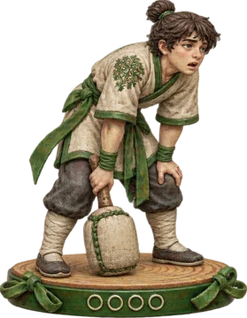
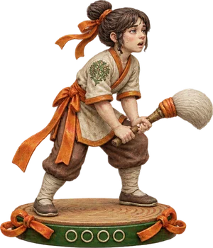
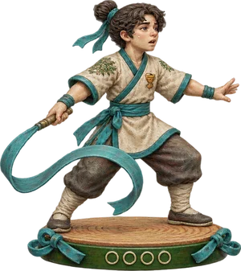

Турнир под Кедровой Луной
Карты и фигурки ведущего
Игровой комплект
3 игрока · 4 игрока · 5 игроков · 6 игроков · 7 игроков
Карта кампании

Поля боя


Герои


Персонажи ведущего


Противники


Ученик Камня с мягким знаком 2Ученик Камня с мягким знаком 5Ученик Камня с мягким знаком 4Ученик Камня с мягким знаком 1Ученик Камня с мягким знаком 3

Ученик Ленты с мягкой кистью 1Ученик Ленты с мягкой кистью 3Ученик Ленты с мягкой кистью 4Ученик Ленты с мягкой кистью 5Ученик Ленты с мягкой кистью 2

Ученик Чаши с мягкой лентой 3Ученик Чаши с мягкой лентой 4Ученик Чаши с мягкой лентой 1Ученик Чаши с мягкой лентой 2Ученик Чаши с мягкой лентой 5